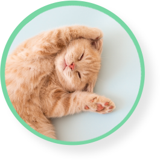
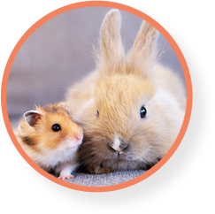
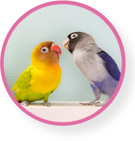
突然のことで戸惑われているかと思います。
どんな不安でも、まずはお電話ください。
葬儀ディレクター1級保有スタッフが
丁寧にご対応いたします。
ペットメモリアル つむぎでは葬儀でペットちゃんとのお別れをお手伝いします。
ご家族様の気持ちに寄り添い、心を込めてお別れのお手伝いをしています。
急死してしまった場合の相談も承っております。
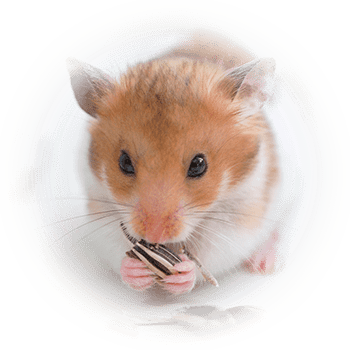
ハムスター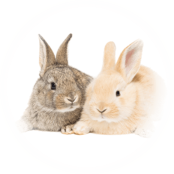
うさぎ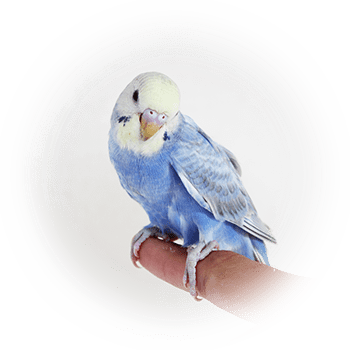
鳥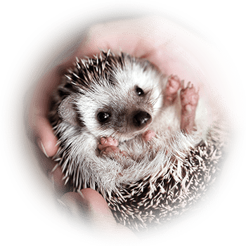
ハリネズミ記載がないペットちゃんでもご相談ください
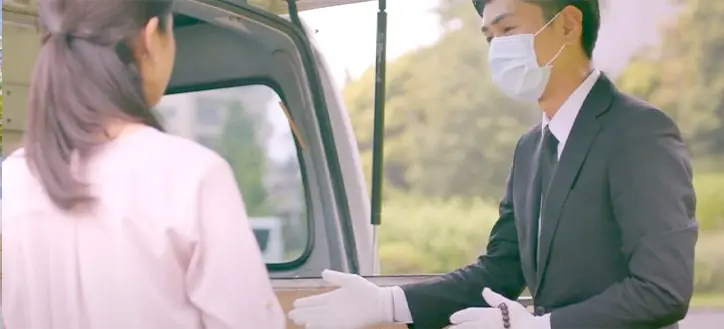
累計施行数150,000件を超える経験と実績で、あらゆるお客様のニーズにお応えし、10年後、20年後も心に残るお別れのお手伝いをさせていただきます。
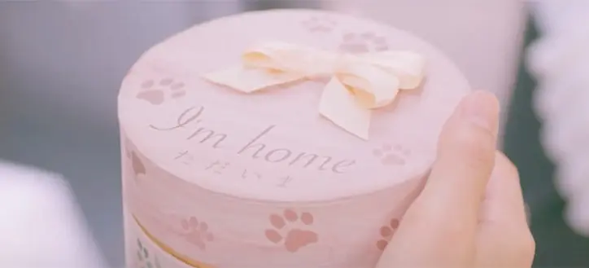
お客様のご都合・ご要望に応じて各種プランをご用意。各プランはそれぞれ100%自社施行なので、業界適正価格でのご提案が可能です。
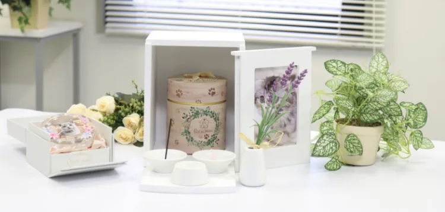
火葬だけでなく、ご納骨・海洋散骨など、ご供養までお手伝いが可能です。メモリアルグッズの販売も行っており、ご自宅でのご供養のご相談も承ります。
ご希望に合わせて3つのプランからお選びいただけます。
追加料金は一切かかりませんのでご安心ください。
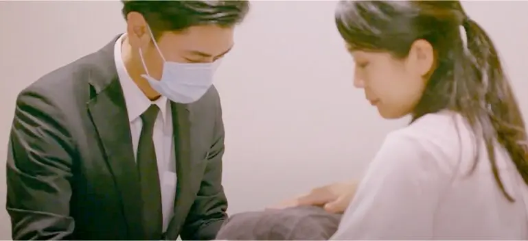
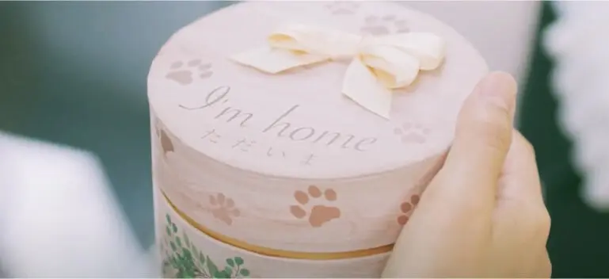
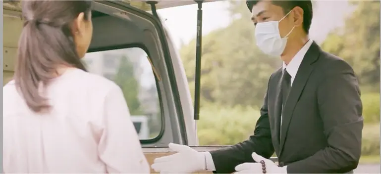
各種クレジットカード（JCB / VISA / Mastercard / Diners / NICOS）
および現金がご利用いただけます。
火葬は100%自社対応だから適正価格でご提供できます。
| つむぎ | A社 | B社 | |
|---|---|---|---|
| 最低価格 | 税込 6,600円〜 | 税込 8,545円〜 | 税込 10,000円〜 |
| サービス内容 | 火葬代＋出張費込み | 火葬代＋出張費込み | 火葬代のみ |
| 受付時間 | 24時間365日 | 24時間365日 | 24時間不定休 |
| 自社施行 | 100%自社施行 | 100%外部委託 | 一部外部委託 |
※火葬費用とは別に、納骨費が霊園により3,300円〜6,600円（税込）かかります。
立会い個別火葬プランの場合
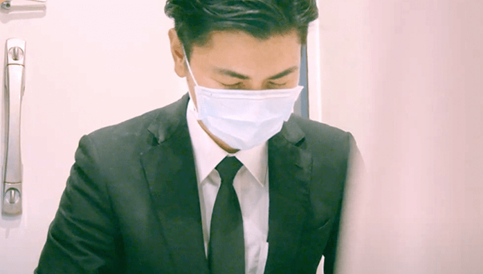
まずはペットメモリアル つむぎ（0800-333-8617）へ。ご家族様のご都合の良い日時に、ご自宅またはご指定の場所へお伺いします。
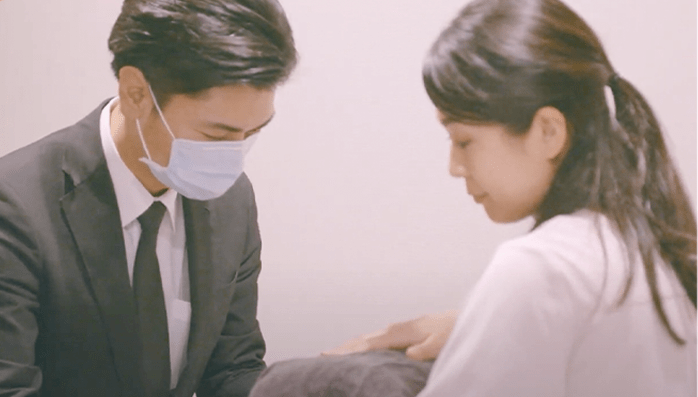
お迎えにあがったスタッフがご家族様と、ご安置されているペットちゃんを専用車までお運びします。
● ご安置のアドバイス お身体を楽な姿勢にしてあげてください。直射日光の当たらない、できるだけ涼しい場所を選んであげましょう。
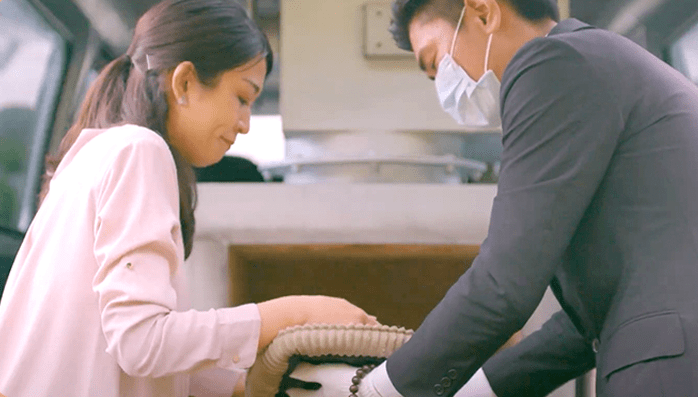
ペットちゃんとの最後のお別れをしていただきます。生前好きだったお菓子やおもちゃ（火葬可能なもの）をお入れできます。
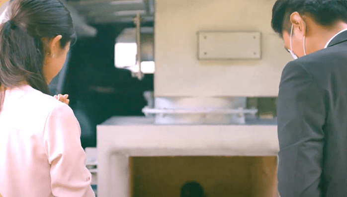
ご家族様と合掌後、ご火葬いたします。
※ペットちゃんの種類や状態によって前後する場合がございます。
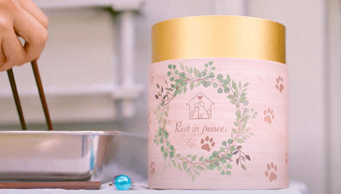
ご火葬後、ご家族様にご収骨をしていただきます。お骨の一部を遺骨カプセル等に収めることも可能です。
● お守りとして遺骨カプセルを皆様でお持ちになる方も多くいらっしゃいます。ご希望の場合はスタッフへお申し付けください。（※カプセルは別途費用）
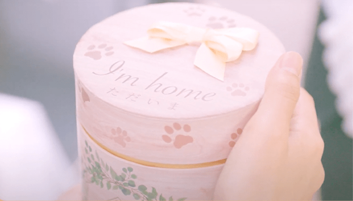
お骨を骨壷に収め、ご家族様へご返骨いたします。ご火葬後もペットちゃんの温もりを感じていただける紙製骨壷もございます（数量限定・無料変更）。
希望の日にちに合わせて頂きました。好きだった食べ物やお花の用意をと教えて頂き持たせました。よく散歩に行った近くの公園で行いました。桜の花が満開でした。
愛犬が亡くなり、出張で火葬してもらえるのは知っていたので探していました。到着から最後までとても丁寧な対応をしていただき、愛犬を無事に見送ることが出来ました。
真摯で丁寧に対応していただきました。遺骨についての説明はとても思いやりがあり有難かったです。安心してお任せできました。感謝しております。
説明も丁寧でとても感じの良い方でした。愛猫は我が家に来て15年、最期は住んだ家から旅立ってきっと喜んでいることと思います。
小さなハムスターでしたが、大きな子と同じようにとても丁寧に扱っていただけて救われた気持ちです。大好きだったひまわりの種をたくさん持たせてあげられました。
15年連れ添った大型犬でしたが、専用車で自宅まで来ていただき安心しました。スタッフの方が思い出話を静かに聞いてくださり、穏やかに過ごせました。
希望の日時に柔軟に合わせていただき助かりました。遺骨カプセルに収める際も温かい言葉をかけてくださり、つむぎさんにお願いして本当に良かったです。
※ この映像は「立ち合い個別火葬プラン」と「合同供養」の流れになります。
※ 「合同火葬プラン」ではご返骨不可になります。また、「個別火葬プラン」はお客様によるお骨上げはありませんのでご注意ください。
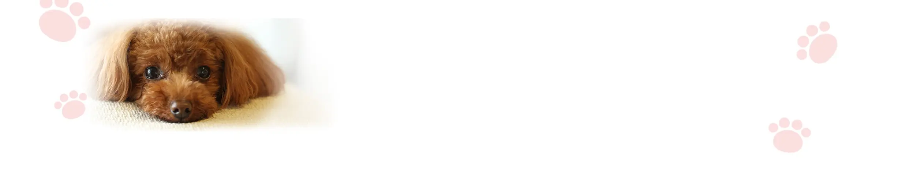
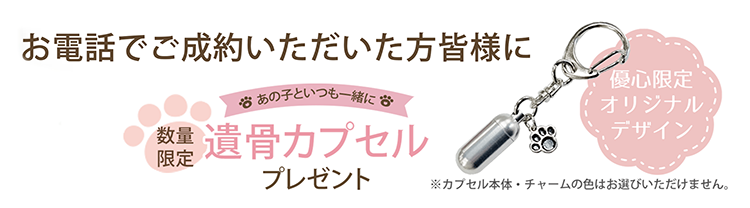
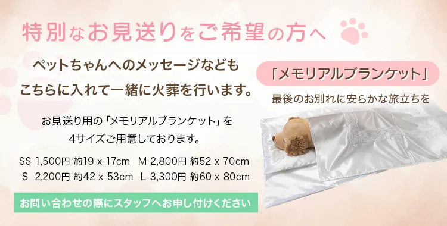
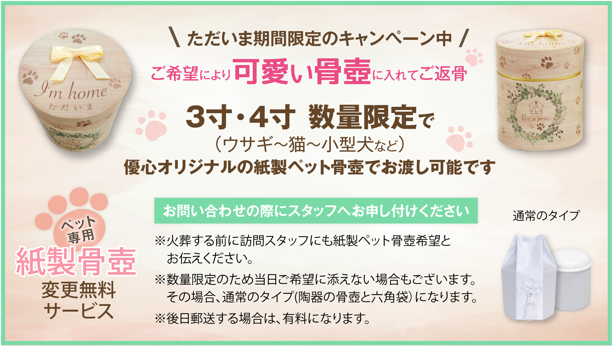
〒107-0062 東京都港区南青山7-3-1 3F/4F
※福島・宮城県内 各所に待機車両を配置し、迅速にお伺いします。